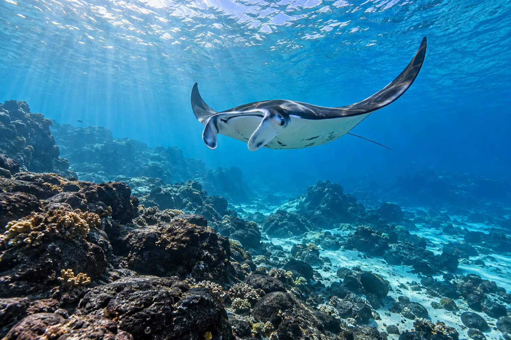

Baie de Keauhou (raies manta)
Kona, Hawaï, États-Unis · plongée, snorkeling

Site célèbre pour ses plongées de nuit avec les raies manta, attirées par les lumières. Une rencontre inoubliable.
- Lieu
- Kona, Hawaï, États-Unis
- Niveau
- Débutant
- Activités
- plongée, snorkeling
- Type d'eau
- Mer / océan
- Coordonnées
- 19.56, -155.96 (position approximative du secteur)
Dangers à connaître
- Plongée de nuit.
- Houle au large.
Le conseil d'Ocean Buddy
Reste au fond ou en surface selon les consignes et ne touche jamais les mantas.
Ouvrir dans Ocean Buddy Télécharger sur l'App Store
Source : Fiche Ocean Buddy · septembre 2026 · à vérifier localement.